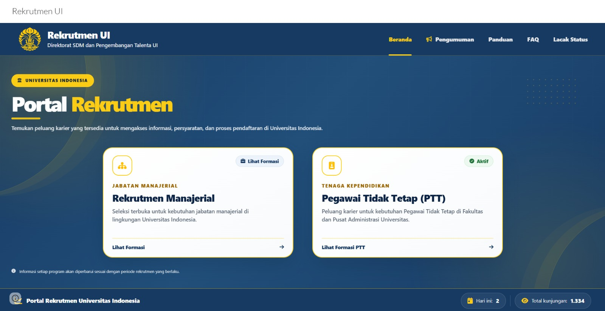
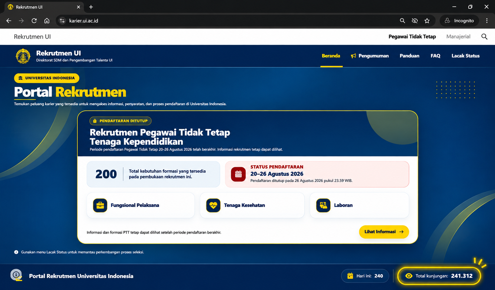

Alur yang Terhubung
Informasi formasi, pendaftaran, pengumuman, dan status seleksi tersaji dalam satu rangkaian layanan.
Satu alur rekrutmen yang menghubungkan pencarian formasi, pendaftaran, pemantauan seleksi, dan tindak lanjut pelamar.
Portal Rekrutmen UI dikembangkan untuk menyatukan kebutuhan pelamar dan pengelola dalam satu layanan, dari informasi formasi hingga penyampaian hasil seleksi.
Pengembangan periode 2026 mencakup rekrutmen Pegawai Tidak Tetap Tenaga Kependidikan untuk formasi fungsional pelaksana, tenaga kesehatan, dan laboran.
Pendekatan pengembangannya menekankan konsistensi antartahap, informasi sesuai konteks pelamar, serta dukungan administrasi dan pelaporan bagi pengelola.
Informasi formasi, pendaftaran, pengumuman, dan status seleksi tersaji dalam satu rangkaian layanan.
Formulir, validasi, dan konfirmasi disesuaikan dengan kebutuhan pada setiap tahapan.
Informasi hasil seleksi dan langkah berikutnya tersedia sesuai perkembangan proses rekrutmen.
Dokumentasi antarmuka memperlihatkan perkembangan portal sejak masa pendaftaran hingga setelah penutupan.


Data kunjungan mengacu pada penghitung dalam tangkapan layar, bukan jumlah pelamar atau pengguna unik.
Fitur pendukung proses rekrutmen bagi pelamar dan pengelola.
Cakupan fitur merujuk pengembangan tahun 2026. Akses layanan mengikuti ketentuan rekrutmen.
Tahapan utama dari pemilihan formasi hingga pengumuman hasil.
flowchart TD
A[Pilih formasi] --> B[Periksa persyaratan]
B --> C[Isi dan kirim lamaran]
C --> D[Terima konfirmasi]
D --> E[Pantau status seleksi]
E --> F[Lihat hasil seleksi]Pengembangan awal portal berfokus pada penyelarasan kebutuhan rekrutmen, alur layanan pelamar, dan proses administrasi seleksi dalam satu sistem yang terhubung.
Rancangan ini menempatkan konsistensi antartahap, kejelasan informasi, dan kemudahan tindak lanjut sebagai prinsip utama. Dokumentasi periode 2026 menjadi dasar referensi untuk pemeliharaan, evaluasi, serta pengembangan lebih lanjut.
Setiap penyempurnaan berikutnya dapat dicatat sesuai ruang lingkup dan kontribusi pengembang yang terlibat.